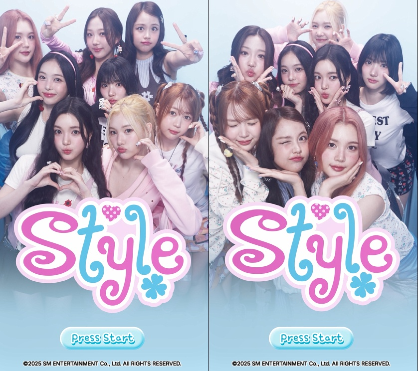

Why Watch
비주얼 톤, 초반 대표곡의 결, 그리고 멤버 케미가 이미 선명하게 보이기 시작한 팀.
01
단체 컷만 봐도 톤이 분명하다
몽환적인 데뷔 무드와 밝은 소녀적 에너지가 함께 간다.
02
대표곡 3곡만 들어도 결이 읽힌다
The Chase → Butterflies → STYLE 순서로 들으면 팀 폭이 잘 보인다.
03
멤버 케미가 빠르게 잡힌다
에이나·이안 같은 무드메이커 라인이 팀 텐션을 더욱 또렷하게 만든다.
추천 감상 루트
단체 사진 → 대표곡 3트랙 → 멤버별 직캠/리얼리티 콘텐츠 순서로 보면 입문 속도가 빨라진다.
